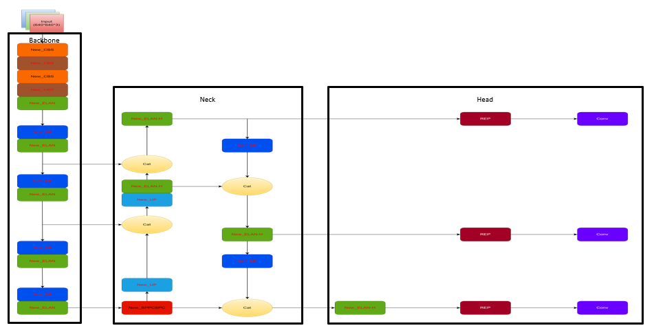
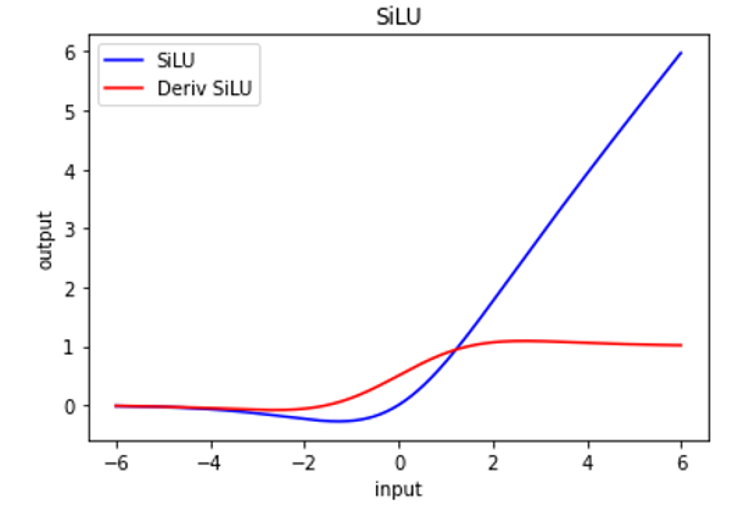
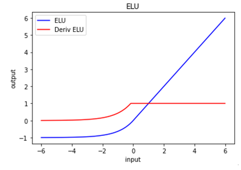

활성화 함수 최적화를 통한 성능 개선
SiLU → ELU
Backbone
Feature Extraction
Conv + ELAN
Neck
Feature Aggregation
PAFPN + SPPCSPC
Head
Detection Output
Class + BBox
각 Convolution Block은 Conv → BatchNorm → Activation 순서로 구성되며, 모든 블록의 활성화 함수를 SiLU에서 ELU로 교체

Fast
Real-time Detection
Accurate
High mAP Score
ELAN
Efficient Layers
f(x) = x · σ(x)
σ(x) = 1 / (1 + e-x)
ReLU의 Dying 문제 완화
x → -∞ 시 output → 0
Vanishing Gradient 발생 가능
f(x) = x, if x > 0
f(x) = α(ex - 1), if x ≤ 0
음수 출력 → Mean ≈ 0
Bias 감소 → 학습 가속
Gradient 흐름 유지


원거리 객체 탐지
Gradient 보존으로 작은 객체 인식률 향상
학습 속도
Mean ≈ 0으로 수렴 가속화
분류 정확도
클래스 간 혼동 감소
메모리 효율
동일 GPU 메모리 사용량